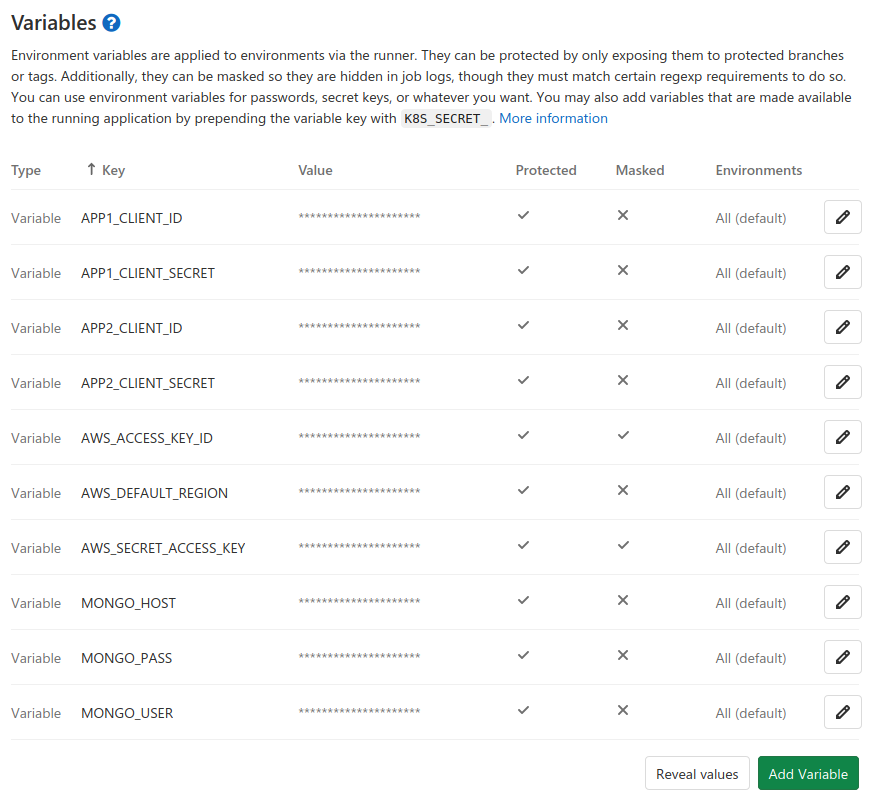
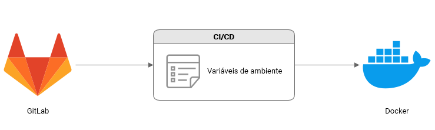
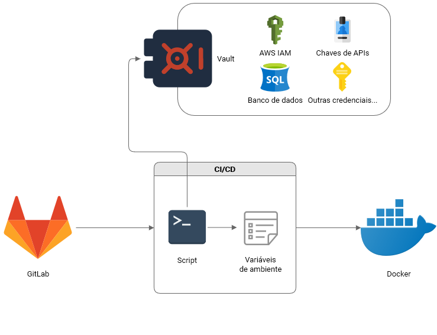
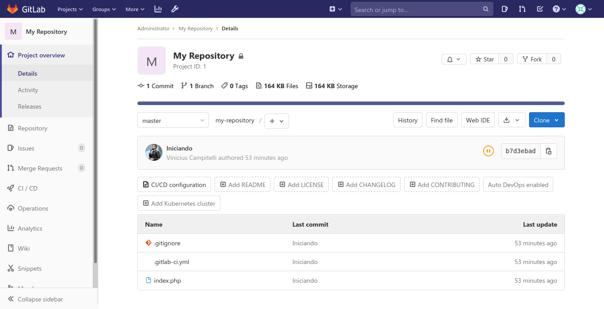
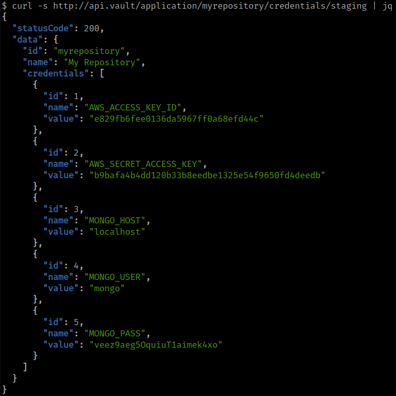

Quem sou eu?

Vinícius Campitelli
- Co-fundador do Curseduca
- Membro do PHPSP
- GitHub e Twitter como @vcampitelli
- Slides em viniciuscampitelli.com
Problemática
Governança de TI
|
|
|
|
|
repositório 1
repositório 2
repositório 3
repositório 4
repositório n
Referências
- Secure Software Development Life Cycle: https://dzone.com/articles/ssdlc-101-what-is-the-secure-software-development
- Capítulo Troque as credenciais regularmente do manual "Melhores práticas de segurança no IAM da AWS": https://docs.aws.amazon.com/pt_br/IAM/latest/UserGuide/best-practices.html
Proposta de solução


Comparações
Comparações
Configuração das Variáveis de Ambiente
Problemática
- Dezenas de entradas
- Mistura entre variáveis de staging, produção e outros ambientes
- Valores expostos a todos os membros do repositório
Solução
- Apenas entradas para se identificar no cofre
- Acesso aos valores via cofre autorizado apenas aos gestores
Comparações
Visão da governança sobre as credenciais
Problemática
- Não possui ou controla em uma ferramenta externa (às vezes até em Excel)
Solução
- Centralizado em um único serviço
Comparações
Rotação de chaves
Problemática
- Manual e sucinto a erros
- Muitas vezes só feita após algum vazamento ou saída de algum membro da equipe
Solução
- Automática e programada em períodos de tempos pré-determinados
Exemplo de implementação
- Instalação de um ambiente de GitLab
-
Criação de um repositório de exemplo que lê as variáveis de um arquivo
.enve imprime na tela - Configuração do CI/CD do GitLab para publicar o repositório acima em um servidor
- Criação de um serviço de cofre
- Desenvolvimento de um script invocado no CI/CD para consultar o serviço de cofre e injetar as variáveis de ambiente
1. Instalação de um ambiente de GitLab
2. Criação de um repositório de exemplo que lê as variáveis de um arquivo .env e imprime na tela
$file = __DIR__ . DIRECTORY_SEPARATOR . '.env';
$handler = fopen($file, 'r');
while (($line = fgets($handler)) !== false) {
list($name, $value) = explode('=', $line, 2);
$_ENV[$name] = trim($value);
}
var_dump($_ENV);↓
array (size=7) 'AWS_ACCESS_KEY_ID' => string 'id' (length=2) 'AWS_SECRET_ACCESS_KEY' => string 'secret' (length=6) 'AWS_DEFAULT_REGION' => string 'us-east-1' (length=9) 'MONGO_HOST' => string 'localhost' (length=9) 'MONGO_USER' => string 'mymongo' (length=7) 'MONGO_PASSWORD' => string '"CDyV_n,$(3x/=`ogv9R' (length=20)ver código-fonte do script
3. Configuração do CI/CD do GitLab para publicar o repositório acima em um servidor
before_script:
- apt-get -y update && apt-get install -y openssh-client
- eval $(ssh-agent -s)
deploy_stage:
script:
- ssh-add <(echo "$SSH_PRIVATE_KEY")
- scp -r * $SSH_USER@$SSH_HOST:$SSH_APP_DIRECTORY4. Criação de um serviço de cofre

5. Desenvolvimento de um script invocado no CI/CD para consultar o serviço de cofre e injetar as variáveis de ambiente
before_script:
- apt-get -y update && apt-get install -y openssh-client
- eval $(ssh-agent -s)
deploy_stage:
script:
- vault-client $VAULT_HOST $CI_PROJECT_NAME staging > .env
- ssh-add <(echo "$SSH_PRIVATE_KEY")
- scp -P22 -r .env $SSH_USER@$SSH_HOST:$SSH_APP_DIRECTORY
- scp -P22 -r * $SSH_USER@$SSH_HOST:$SSH_APP_DIRECTORY
Conclusão
Devo usar um serviço de cofre quando há...
- Muitas variáveis de ambiente espalhadas em repositórios;
- Necessidade de não exibir credenciais a alguns membros do repositório;
- Alta rotatividade de funcionários;
- Equipe de governança de TI e/ou segurança da informação (GRC) para controle e centralização.